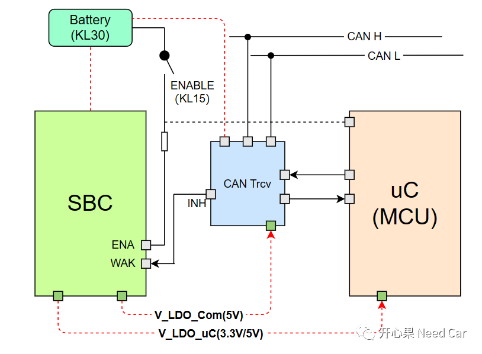
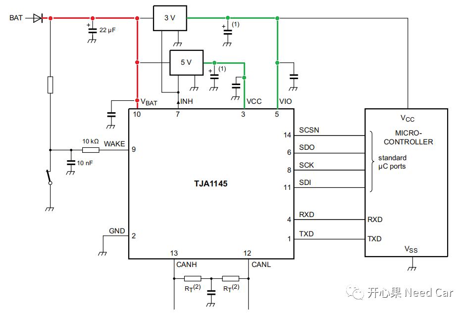
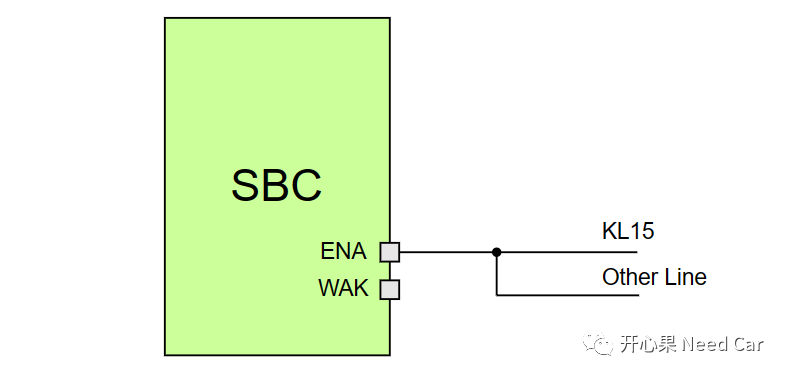
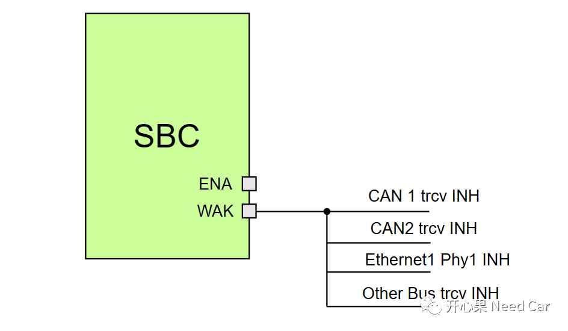

开心果 Need Car · 2023-03-24T12:39:00+08:00 · 微信原文
本文，试着从电路原理入手，讨论一下MCU的上、下电。
1、MCU上电条件
关于uC（MCU）的唤醒条件，之前聊过，可以参考前文《嵌入式开发：如何理解ECU唤醒、休眠、Reset?》。MCU供电与电源管理芯片SBC（System Basic Chip）之间的关系，示意如下：

一般来说，节点（MCU）的唤醒会受控两方面作用：硬线和网络扰动。
（一）硬线唤醒MCU
所谓硬线，可以理解为IO操作，比如：KL15硬线。平时常说的ignition从off到on，本质就是KL15对应IO的闭合动作，进而使得蓄电池（KL30）的12V电使能SBC的ENA Pin，之后，SBC给对应器件输出工作电压，eg：Transceiver和uC。
注意：SBC给外围器件输出的电压，一般指这些外围器件所需要的工作电压。器件除了正常工作电压以外，还有一些监控电压，eg：CAN Trcv会常连KL30（Battery），用于自身电压和总线扰动的监控。如下图示意，VBAT属于常电（12V），而Trcv工作所用的Vcc（5V）和Vio（3.3V）则由SBC提供。即：Trcv在Sleep模式下，如果监控到唤醒事件（Wakeup Pattern或者指定的网络管理报文），拉高INH Pin，进而使能SBC给Trcv输出工作电压。


在整车中，有的节点唤醒受KL15硬线控制，有的不受KL15硬线控制。如果节点受KL15硬件控制，KL15硬线一般作用到SBC，SBC控制uC的供电与否，进而才有节点唤醒的可能。也就是说：不同节点，唤醒源的个数和方式有区别。当然，有的SBC不仅仅受一个KL15硬线使能，还可能受其他硬线（Other Line）的使能。不管SBC受多少外部硬线作用，一般来说，这些硬线之间是或的关系，即：每个硬线可单独使能SBC，进而给MCU、Trcv等器件提供工作电压，进而唤醒对应的器件。
（二）网络扰动

当Trcv收到特定的唤醒时序或者指定的报文时，Trcv将INH Pin拉高，进而拉高SBC的WAK Pin，使能SBC，之后，SBC给MCU、Trcv等器件输出工作电压，这样，MCU被唤醒。
如果一个节点使用多种或者多个同类型Trcv时，每个Trcv的INH与SBC WAK是并联关系，也就是说，任何一个Trcv的INH均可使能SBC，进而唤醒MCU。
对于Lin总线，工程中，可能不将其作为唤醒源，而是从属到CAN/Flexray/Ethernet的唤醒时序中。
MCU下电条件
MCU的下电流程（Shutdown）与MCU上电流程不同，MCU上电时，只要有一个唤醒源触发，即可唤醒MCU，但是，如果MCU想下电，则必须检查每一个唤醒源，当所有的唤醒源都不再请求通信时，MCU才能执行下电流程。
当上述的所有请求都不满足时，程序开始执行MCU的下电流程。在Autosar的架构中，上述条件由BswM周期性检查，而BswM中的Rule，则需要开发者设计，当满足下电流程以后，BswM会通知EcuM，由EcuM控制节点的下电时序。
往期精彩回顾
Bootloader开发：为什么需要SBL（Secondary Bootloader）?
Autosar EcuM：APP由RUN到POST_RUN浅析